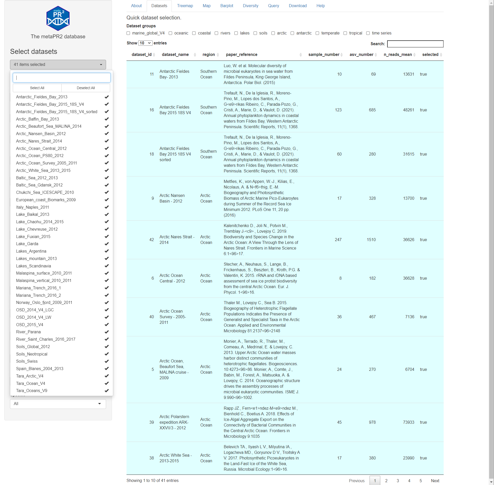
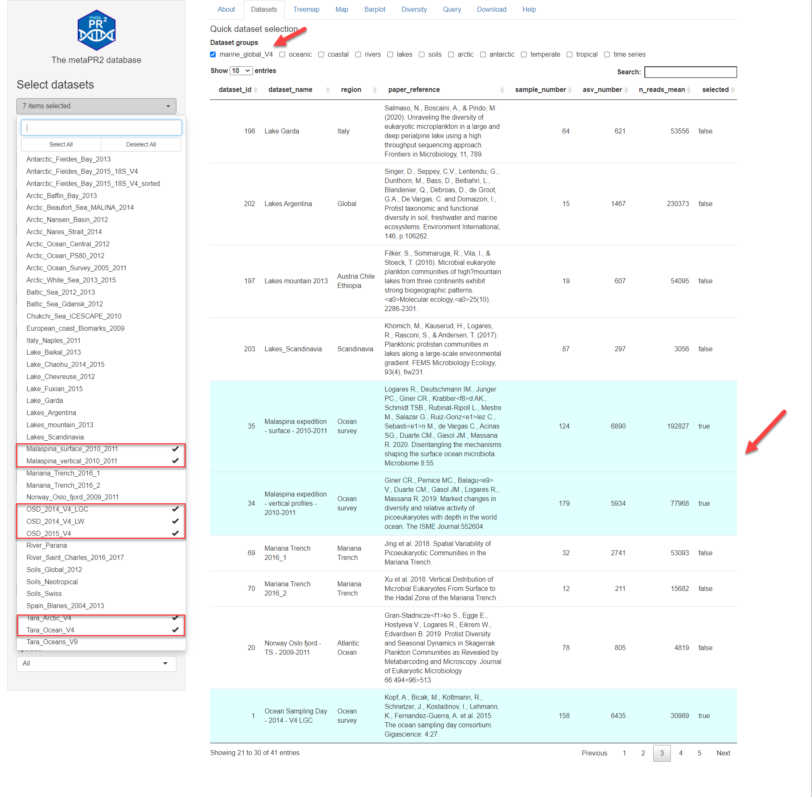

Datasets
vignette-datasets.RmdThis page (Fig. 1) lists all the datasets included in the database (41 for version 1.0, 59 for version 2.0) with basic information (reference, number of samples, mean number of reads). Datasets can be selected using the left panel but there is also a quick way to select datasets from specific environments or time series (Fig. 2). It is possible to save the settings (dataset selected, gene region, DNA/RNA etc…) in a simple text file (yaml) that can edited/reloaded.

Fig.1: Datasets.

Fig. 2: Quick selection of datasets (top arrow).